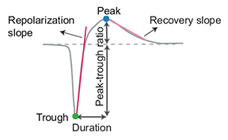

Brain Observatory - Neuropixels
Contents
Brain Observatory - Neuropixels#
This notebook will introduce you to the Neuropixel dataset and SDK functions.
import os
import numpy as np
import matplotlib.pyplot as plt
import pandas as pd
The main entry point is the EcephyProjectCache class. This class is
responsible for downloading any requested data or metadata as needed and storing
it in well known locations. For this workshop, all of the data has been
preloaded onto the hard drives you have received, and is available on AWS.
We begin by importing the EcephysProjectCache class and instantiating it.
manifest_path is a path to the manifest file. We will use the manifest file
preloaded onto your Workshop hard drives. Make sure that drive_path is set
correctly for your platform. (See the first cell in this notebook.)
from allensdk.brain_observatory.ecephys.ecephys_project_cache import EcephysProjectCache
from allensdk.brain_observatory.ecephys import ecephys_session
cache = EcephysProjectCache.from_warehouse()
Exploring available sessions of the dataset#
:::{admonition} Example: Get information about what’s in the Neuropixels dataset
Use the get_sessions function from EcephysProjectCache to retrieve a
dataframe of all the available sessions. What information does this dataframe
contain?
How many sessions are there in the dataset?
What is the average number of units in an experiment? The max number? The minimum?
What are the different genotypes that were used in these experiments? How many sessions per genotype?
What are all the brain structures that data has been collected from? :::
sessions = cache.get_session_table()
sessions.head()
| published_at | specimen_id | session_type | age_in_days | sex | full_genotype | unit_count | channel_count | probe_count | ecephys_structure_acronyms | |
|---|---|---|---|---|---|---|---|---|---|---|
| id | ||||||||||
| 715093703 | 2019-10-03T00:00:00Z | 699733581 | brain_observatory_1.1 | 118.0 | M | Sst-IRES-Cre/wt;Ai32(RCL-ChR2(H134R)_EYFP)/wt | 884 | 2219 | 6 | [CA1, VISrl, nan, PO, LP, LGd, CA3, DG, VISl, ... |
| 719161530 | 2019-10-03T00:00:00Z | 703279284 | brain_observatory_1.1 | 122.0 | M | Sst-IRES-Cre/wt;Ai32(RCL-ChR2(H134R)_EYFP)/wt | 755 | 2214 | 6 | [TH, Eth, APN, POL, LP, DG, CA1, VISpm, nan, N... |
| 721123822 | 2019-10-03T00:00:00Z | 707296982 | brain_observatory_1.1 | 125.0 | M | Pvalb-IRES-Cre/wt;Ai32(RCL-ChR2(H134R)_EYFP)/wt | 444 | 2229 | 6 | [MB, SCig, PPT, NOT, DG, CA1, VISam, nan, LP, ... |
| 732592105 | 2019-10-03T00:00:00Z | 717038288 | brain_observatory_1.1 | 100.0 | M | wt/wt | 824 | 1847 | 5 | [grey, VISpm, nan, VISp, VISl, VISal, VISrl] |
| 737581020 | 2019-10-03T00:00:00Z | 718643567 | brain_observatory_1.1 | 108.0 | M | wt/wt | 568 | 2218 | 6 | [grey, VISmma, nan, VISpm, VISp, VISl, VISrl] |
How many sessions are available?
sessions.shape[0]
58
What’s the average number of units in a session? The max? The min?
print(sessions.unit_count.mean())
print(sessions.unit_count.max())
print(sessions.unit_count.min())
689.8275862068965
1005
415
plt.hist(sessions.unit_count, bins=20);
plt.xlabel("Unit count")
plt.ylabel("# sessions")
Text(0, 0.5, '# sessions')
What are the different genotypes that were used for this dataset? How many sessions per genotype are available?
sessions.full_genotype.value_counts()
wt/wt 30
Sst-IRES-Cre/wt;Ai32(RCL-ChR2(H134R)_EYFP)/wt 12
Pvalb-IRES-Cre/wt;Ai32(RCL-ChR2(H134R)_EYFP)/wt 8
Vip-IRES-Cre/wt;Ai32(RCL-ChR2(H134R)_EYFP)/wt 8
Name: full_genotype, dtype: int64
What are the different session types? How many sessions per type?
sessions.session_type.value_counts()
brain_observatory_1.1 32
functional_connectivity 26
Name: session_type, dtype: int64
What are all the structures that data has been collected from?
all_areas = []
for index,row in sessions.iterrows():
for a in row.ecephys_structure_acronyms:
if a not in all_areas:
all_areas.append(a)
print(all_areas)
['CA1', 'VISrl', nan, 'PO', 'LP', 'LGd', 'CA3', 'DG', 'VISl', 'PoT', 'VISp', 'grey', 'VISpm', 'APN', 'MB', 'VISam', 'TH', 'Eth', 'POL', 'NOT', 'SUB', 'VL', 'CA2', 'VPM', 'VISal', 'SCig', 'PPT', 'VIS', 'ProS', 'LGv', 'HPF', 'VISmma', 'PP', 'PIL', 'MGv', 'VPL', 'IGL', 'SGN', 'IntG', 'LD', 'MGm', 'MGd', 'POST', 'MRN', 'VISli', 'OP', 'ZI', 'VISmmp', 'PF', 'LT', 'RPF', 'PRE', 'SCiw', 'CP', 'COAa', 'RT', 'SCop', 'SCsg', 'SCzo', 'COApm', 'OLF', 'BMAa']
To get more information about these structures, visit our reference atlas web app.
How many sessions have data from VISp?
count=0
for index,row in sessions.iterrows():
if 'VISp' in row.ecephys_structure_acronyms:
count+=1
print(count)
56
The session object#
The session object contains all the data and metadata for a single experiment session, including spike times, stimulus information, unit waveforms and derived metrics, LFP, and the mouse’s running speed.
The session object is accessed using cache.get_session_data(session_id)
:::{note} Experiment data is loaded upon initialization of the class. Some data can be accessed directly as an attribute of the class, others by using ‘get’ functions. :::
:::{admonition} Example: Select a session
Let’s pick one session to examine in greater detail. Select a
brain_observatory_1.1 session. Feel free to use other metadata to select one
session and get the session_id (the index).
:::
session_id = sessions[(sessions.unit_count>900)&(sessions.session_type=='brain_observatory_1.1')
&(sessions.full_genotype=='wt/wt')].index[0]
print(session_id)
750332458
Which areas were recorded from in this session?
sessions.ecephys_structure_acronyms[session_id]
array(['grey', 'VISrl', nan, 'VISal', 'IntG', 'IGL', 'LGd', 'CA3', 'DG',
'CA1', 'VISl', 'VISp', 'VISpm', 'VISam'], dtype=object)
:::{admonition} Example: Get the data for this session.
Use the get_session_data function of the cache to get the session object for
this session. This object contains the data that is stored in the NWB file.
:::
session = cache.get_session_data(session_id)
Units#
The primary data in this dataset is the recorded acrtivity of isolated units. A
number of metrics are used to isolate units through spike sorting, and these
metrics can be used to access how well isolated they are and the quality of
each unit. The units dataframe provides many of these metrics, as well as
parameterization of the waveform for each unit that passed initial QC,
including
firing rate: mean spike rate during the entire session
presence ratio: fraction of session when spikes are present
ISI violations: rate of refractory period violations
Isolation distances: distance to nearest cluster in Mihalanobis space
d’: classification accuracy based on LDA
SNR: signal to noise ratio
Maximum drift: Maximum change in spike depth during recording
Cumulative drift: Cumulative change in spike depth during recording
1D Waveform features:
For more information on these:
https://github.com/AllenInstitute/ecephys_spike_sorting/tree/master/ecephys_spike_sorting/modules/quality_metrics https://github.com/AllenInstitute/ecephys_spike_sorting/tree/master/ecephys_spike_sorting/modules/mean_waveforms
:::{admonition} Example: Units
Get the units dataframe for this session.
What the the metrics? (i.e. what are the columns for the dataframe?
How many units are there? How many units per structure? :::
session.units.head()
| waveform_PT_ratio | waveform_amplitude | amplitude_cutoff | cluster_id | cumulative_drift | d_prime | firing_rate | isi_violations | isolation_distance | L_ratio | ... | ecephys_structure_id | ecephys_structure_acronym | anterior_posterior_ccf_coordinate | dorsal_ventral_ccf_coordinate | left_right_ccf_coordinate | probe_description | location | probe_sampling_rate | probe_lfp_sampling_rate | probe_has_lfp_data | |
|---|---|---|---|---|---|---|---|---|---|---|---|---|---|---|---|---|---|---|---|---|---|
| unit_id | |||||||||||||||||||||
| 951817231 | 0.293351 | 101.641410 | 0.001248 | 8 | 392.48 | 6.461795 | 15.773666 | 0.020093 | 147.423046 | 0.000259 | ... | 8.0 | grey | NaN | NaN | NaN | probeA | See electrode locations | 29999.968724 | 1249.998697 | True |
| 951817222 | 1.427508 | 74.654970 | 0.032535 | 7 | 948.33 | 5.638511 | 6.423025 | 0.007457 | 95.080849 | 0.000727 | ... | 8.0 | grey | NaN | NaN | NaN | probeA | See electrode locations | 29999.968724 | 1249.998697 | True |
| 951817272 | 0.240866 | 182.350545 | 0.000218 | 13 | 578.80 | 4.865528 | 25.891454 | 0.002123 | 121.137882 | 0.017477 | ... | 8.0 | grey | NaN | NaN | NaN | probeA | See electrode locations | 29999.968724 | 1249.998697 | True |
| 951817282 | 0.650177 | 183.182025 | 0.000223 | 14 | 545.47 | 4.402664 | 9.177656 | 0.001370 | 59.655811 | 0.025102 | ... | 8.0 | grey | NaN | NaN | NaN | probeA | See electrode locations | 29999.968724 | 1249.998697 | True |
| 951817316 | 0.387017 | 71.279130 | 0.059431 | 18 | 446.09 | 3.582546 | 10.277127 | 0.050247 | 56.080395 | 0.021113 | ... | 8.0 | grey | NaN | NaN | NaN | probeA | See electrode locations | 29999.968724 | 1249.998697 | True |
5 rows × 40 columns
session.units.columns
Index(['waveform_PT_ratio', 'waveform_amplitude', 'amplitude_cutoff',
'cluster_id', 'cumulative_drift', 'd_prime', 'firing_rate',
'isi_violations', 'isolation_distance', 'L_ratio', 'local_index',
'max_drift', 'nn_hit_rate', 'nn_miss_rate', 'peak_channel_id',
'presence_ratio', 'waveform_recovery_slope',
'waveform_repolarization_slope', 'silhouette_score', 'snr',
'waveform_spread', 'waveform_velocity_above', 'waveform_velocity_below',
'waveform_duration', 'filtering', 'probe_channel_number',
'probe_horizontal_position', 'probe_id', 'probe_vertical_position',
'structure_acronym', 'ecephys_structure_id',
'ecephys_structure_acronym', 'anterior_posterior_ccf_coordinate',
'dorsal_ventral_ccf_coordinate', 'left_right_ccf_coordinate',
'probe_description', 'location', 'probe_sampling_rate',
'probe_lfp_sampling_rate', 'probe_has_lfp_data'],
dtype='object')
How many units are in this session?
session.units.shape[0]
902
Which areas (structures) are they from?
print(session.units.ecephys_structure_acronym.unique())
['grey' 'VISam' 'VISpm' 'VISp' 'IntG' 'IGL' 'LGd' 'CA3' 'DG' 'CA1' 'VISl'
'VISal' 'VISrl']
How many units per area are there?
session.units.ecephys_structure_acronym.value_counts()
grey 558
VISal 71
VISp 63
VISam 60
VISrl 44
VISl 38
VISpm 19
CA1 16
CA3 15
DG 7
IGL 5
LGd 4
IntG 2
Name: ecephys_structure_acronym, dtype: int64
:::{admonition} Example: Select ‘good’ units A default is to include units that have a SNR greater than 1 and ISI violations less than 0.5 Plot a histogram of the values for each of these metrics? How many units meet these criteria? How many per structure? :::
plot a histogram for SNR
plt.hist(session.units.snr, bins=30);
plot a histogram for ISI violations
plt.hist(session.units.isi_violations, bins=30);

good_units = session.units[(session.units.snr>1)&(session.units.isi_violations<0.5)]
len(good_units)
868
good_units.ecephys_structure_acronym.value_counts()
grey 548
VISal 64
VISp 62
VISam 60
VISrl 37
VISl 34
VISpm 18
CA3 15
CA1 15
DG 7
IGL 4
LGd 3
IntG 1
Name: ecephys_structure_acronym, dtype: int64
:::{admonition} Example: Compare the firing rate of good units in different structures Make a violinplot of the overall firing rates of units across structures. :::
import seaborn as sns
sns.violinplot(y='firing_rate', x='ecephys_structure_acronym',data=good_units)
<AxesSubplot:xlabel='ecephys_structure_acronym', ylabel='firing_rate'>
:::{admonition} Example: Plot the location of the units on the probe Color each structure a different color. What do you learn about the vertical position values? :::
plt.figure(figsize=(8,6))
# restrict to one probe
probe_id = good_units.probe_id.values[0]
probe_units = good_units[good_units.probe_id==probe_id]
for structure in good_units.ecephys_structure_acronym.unique():
plt.hist(
probe_units[probe_units.ecephys_structure_acronym==structure].probe_vertical_position.values,
bins=100, range=(0,3200), label=structure
)
plt.legend()
plt.xlabel('Probe vertical position (mm)', fontsize=16)
plt.ylabel('Unit count', fontsize=16)
plt.show()

Spike Times#
The primary data in this dataset is the recorded acrtivity of isolated units.
The spike times is a dictionary of spike times for each units in the session.
:::{admonition} Example: Spike Times
Next let’s find the spike_times for these units.
:::
spike_times = session.spike_times
What type of object is this?
type(spike_times)
dict
How many items does it include?
len(spike_times)
902
len(session.units)
902
What are the keys for this object?
list(spike_times.keys())[:5]
[951817566, 951817557, 951818568, 951818561, 951818553]
These keys are unit ids. Use the unit_id for the first unit to get the spike times for that unit. How many spikes does it have in the entire session?
spike_times[session.units.index[0]]
array([3.79596714e+00, 3.81646716e+00, 3.84250052e+00, ...,
9.75020103e+03, 9.75023709e+03, 9.75027469e+03])
print(len(spike_times[session.units.index[0]]))
153738
:::{admonition} Example: Get the spike times for the units in V1 Use the units dataframe to identify units in ‘VISp’ and use the spike_times to get their spikes. Start just getting the spike times for the first unit identified this way. Plot a raster plot of the spikes during the first 5 minutes (300 seconds) of the experiment. :::
session.units[session.units.ecephys_structure_acronym=='VISp'].head()
| waveform_PT_ratio | waveform_amplitude | amplitude_cutoff | cluster_id | cumulative_drift | d_prime | firing_rate | isi_violations | isolation_distance | L_ratio | ... | ecephys_structure_id | ecephys_structure_acronym | anterior_posterior_ccf_coordinate | dorsal_ventral_ccf_coordinate | left_right_ccf_coordinate | probe_description | location | probe_sampling_rate | probe_lfp_sampling_rate | probe_has_lfp_data | |
|---|---|---|---|---|---|---|---|---|---|---|---|---|---|---|---|---|---|---|---|---|---|
| unit_id | |||||||||||||||||||||
| 951814973 | 0.599534 | 26.217945 | 0.014322 | 361 | 345.26 | 2.927932 | 1.503416 | 0.410801 | 61.132264 | 0.001457 | ... | 385.0 | VISp | NaN | NaN | NaN | probeC | See electrode locations | 29999.996461 | 1249.999853 | True |
| 951814989 | 0.366990 | 43.292340 | 0.026720 | 363 | 386.49 | 5.082127 | 1.885503 | 0.000000 | 89.588334 | 0.001691 | ... | 385.0 | VISp | NaN | NaN | NaN | probeC | See electrode locations | 29999.996461 | 1249.999853 | True |
| 951816812 | 0.394103 | 103.924470 | 0.002891 | 561 | 146.34 | 4.708563 | 2.415644 | 0.046132 | 80.151626 | 0.000185 | ... | 385.0 | VISp | NaN | NaN | NaN | probeC | See electrode locations | 29999.996461 | 1249.999853 | True |
| 951815078 | 0.329370 | 111.679035 | 0.051784 | 373 | 165.93 | 3.799649 | 4.062188 | 0.100211 | 55.356604 | 0.010204 | ... | 385.0 | VISp | NaN | NaN | NaN | probeC | See electrode locations | 29999.996461 | 1249.999853 | True |
| 951815150 | 0.526429 | 232.830975 | 0.001259 | 382 | 302.18 | 6.045597 | 0.516495 | 0.000000 | 80.501412 | 0.000006 | ... | 385.0 | VISp | NaN | NaN | NaN | probeC | See electrode locations | 29999.996461 | 1249.999853 | True |
5 rows × 40 columns
unit_id = session.units[session.units.ecephys_structure_acronym=='VISp'].index[12]
spikes = spike_times[unit_id]
plt.figure(figsize=(15,4))
plt.plot(spikes, np.repeat(0,len(spikes)), '|')
plt.xlim(0,300)
plt.xlabel("Time (s)")
Text(0.5, 0, 'Time (s)')

:::{admonition} Example: Plot the firing rate for this units across the entire session A raster plot won’t work for visualizing the activity across the entire session as there are too many spikes! Instead, bin the activity in 1 second bins. :::
numbins = int(np.ceil(spikes.max()))
binned_spikes = np.empty((numbins))
for i in range(numbins):
binned_spikes[i] = len(spikes[(spikes>i)&(spikes<i+1)])
plt.figure(figsize=(20,5))
plt.plot(binned_spikes)
plt.xlabel("Time (s)")
plt.ylabel("FR (Hz)")
Text(0, 0.5, 'FR (Hz)')
:::{admonition} Example: Plot firing rates for units in V1 Now let’s do this for up to 50 units in V1. Make an array of the binned activity of all units in V1 called ‘v1_binned’. We’ll use this again later. :::
v1_units = session.units[session.units.ecephys_structure_acronym=='VISp']
numunits = len(v1_units)
if numunits>50:
numunits=50
v1_binned = np.empty((numunits, numbins))
for i in range(numunits):
unit_id = v1_units.index[i]
spikes = spike_times[unit_id]
for j in range(numbins):
v1_binned[i,j] = len(spikes[(spikes>j)&(spikes<j+1)])
Plot the activity of all the units, one above the other
plt.figure(figsize=(20,10))
for i in range(numunits):
plt.plot(i+(v1_binned[i,:]/30.), color='gray')

Unit waveforms#
For each unit, the average action potential waveform has been recorded from each
channel of the probe. This is contained in the mean_waveforms object. This is
the characteristic pattern that distinguishes each unit in spike sorting, and it
can also help inform us regarding differences between cell types.
We will use this in conjuction with the channel_structure_intervals function
which tells us where each channel is located in the brain. This will let us get
a feel for the spatial extent of the extracellular action potential waveforms in
relation to specific structures.
:::{admonition} Example: Unit waveforms Get the waveform for one unit. :::
waveforms = session.mean_waveforms
What type of object is this?
type(waveforms)
dict
What are the keys?
list(waveforms.keys())[:5]
[951817566, 951817557, 951818568, 951818561, 951818553]
Get the waveform for one unit
unit = session.units.index.values[400]
wf = session.mean_waveforms[unit]
What type of object is this? What is its shape?
type(wf)
xarray.core.dataarray.DataArray
wf.coords
Coordinates:
* channel_id (channel_id) int64 850176026 850176028 ... 850176790 850176792
* time (time) float64 0.0 3.333e-05 6.667e-05 ... 0.002667 0.0027
wf.shape
(373, 82)
plt.imshow(wf, aspect=0.2, origin='lower')
plt.xlabel('Time steps')
plt.ylabel('Channel #')
Text(0, 0.5, 'Channel #')

:::{admonition} Example: Unit waveforms
Use the channel_structure_intervals to get information about where each
channel is located.
We need to pass this function a list of channel ids, and it will identify channels that mark boundaries between identified brain regions.
We can use this information to add some context to our visualization. :::
# pass in the list of channels from the waveforms data
ecephys_structure_acronyms, intervals = session.channel_structure_intervals(wf.channel_id.values)
print(ecephys_structure_acronyms)
print(intervals)
['grey' 'VISp' nan]
[ 0 204 292 373]
Place tick marks at the interval boundaries, and labels at the interval midpoints.
fig, ax = plt.subplots()
plt.imshow(wf, aspect=0.2, origin='lower')
plt.colorbar(ax=ax)
ax.set_xlabel("time (s)")
ax.set_yticks(intervals)
# construct a list of midpoints by averaging adjacent endpoints
interval_midpoints = [ (aa + bb) / 2 for aa, bb in zip(intervals[:-1], intervals[1:])]
ax.set_yticks(interval_midpoints, minor=True)
ax.set_yticklabels(ecephys_structure_acronyms, minor=True)
plt.tick_params("y", which="major", labelleft=False, length=40)
plt.show()
Let’s see if this matches the structure information saved in the units table:
session.units.loc[unit, "ecephys_structure_acronym"]
'grey'
:::{admonition} Example: Plot the mean waveform for the peak channel for each unit in the dentate gyrus (DG) Start by plotting the mean waveform for the peak channel for the unit we just looked at. Then do this for all the units in DG, making a heatmap of these waveforms :::
Find the peak channel for this unit, and plot the mean waveform for just that channel
channel_id = session.units.loc[unit, 'peak_channel_id']
print(channel_id)
850176126
plt.plot(wf.loc[{"channel_id": channel_id}])
[<matplotlib.lines.Line2D at 0x7fe8e0121fd0>]
fig, ax = plt.subplots()
th_unit_ids = good_units[good_units.ecephys_structure_acronym=="DG"].index.values
peak_waveforms = []
for unit_id in th_unit_ids:
peak_ch = good_units.loc[unit_id, "peak_channel_id"]
unit_mean_waveforms = session.mean_waveforms[unit_id]
peak_waveforms.append(unit_mean_waveforms.loc[{"channel_id": peak_ch}])
time_domain = unit_mean_waveforms["time"]
peak_waveforms = np.array(peak_waveforms)
plt.pcolormesh(peak_waveforms)
<matplotlib.collections.QuadMesh at 0x7fe9a60d5bb0>
Stimuli#
A variety of visual stimuli were presented throughout the recording session, and the session object contains detailed information about what stimuli were presented when.
:::{admonition} Example: Stimulus
What stimuli were presented in this session? Find the stimulus_names for the session.
:::
session.stimulus_names
['spontaneous',
'gabors',
'flashes',
'drifting_gratings',
'natural_movie_three',
'natural_movie_one',
'static_gratings',
'natural_scenes']
:::{admonition} Example: Stimulus epochs
These stimuli are interleaved throughout the session. We can use the
stimulus_epochs to see when each stimulus type was presented. Then we’ll add
this to the activity plot we made above.
:::
stimulus_epochs = session.get_stimulus_epochs()
stimulus_epochs
| start_time | stop_time | duration | stimulus_name | stimulus_block | |
|---|---|---|---|---|---|
| 0 | 24.343718 | 84.410468 | 60.066750 | spontaneous | null |
| 1 | 84.410468 | 996.405519 | 911.995051 | gabors | 0.0 |
| 2 | 996.405519 | 1285.396908 | 288.991389 | spontaneous | null |
| 3 | 1285.396908 | 1583.896304 | 298.499396 | flashes | 1.0 |
| 4 | 1583.896304 | 1585.647748 | 1.751444 | spontaneous | null |
| 5 | 1585.647748 | 2185.148542 | 599.500795 | drifting_gratings | 2.0 |
| 6 | 2185.148542 | 2216.174468 | 31.025925 | spontaneous | null |
| 7 | 2216.174468 | 2816.676108 | 600.501640 | natural_movie_three | 3.0 |
| 8 | 2816.676108 | 2846.701238 | 30.025130 | spontaneous | null |
| 9 | 2846.701238 | 3146.952038 | 300.250800 | natural_movie_one | 4.0 |
| 10 | 3146.952038 | 3176.977098 | 30.025060 | spontaneous | null |
| 11 | 3176.977098 | 3776.477932 | 599.500835 | drifting_gratings | 5.0 |
| 12 | 3776.477932 | 4077.729588 | 301.251655 | spontaneous | null |
| 13 | 4077.729588 | 4678.231228 | 600.501640 | natural_movie_three | 6.0 |
| 14 | 4678.231228 | 4708.256308 | 30.025080 | spontaneous | null |
| 15 | 4708.256308 | 5397.832372 | 689.576065 | drifting_gratings | 7.0 |
| 16 | 5397.832372 | 5398.833208 | 1.000835 | spontaneous | null |
| 17 | 5398.833208 | 5879.267878 | 480.434670 | static_gratings | 8.0 |
| 18 | 5879.267878 | 5909.292938 | 30.025060 | spontaneous | null |
| 19 | 5909.292938 | 6389.694278 | 480.401340 | natural_scenes | 9.0 |
| 20 | 6389.694278 | 6689.945098 | 300.250820 | spontaneous | null |
| 21 | 6689.945098 | 7170.346408 | 480.401310 | natural_scenes | 10.0 |
| 22 | 7170.346408 | 7200.371488 | 30.025080 | spontaneous | null |
| 23 | 7200.371488 | 7680.772808 | 480.401320 | static_gratings | 11.0 |
| 24 | 7680.772808 | 7710.797908 | 30.025100 | spontaneous | null |
| 25 | 7710.797908 | 8011.048698 | 300.250790 | natural_movie_one | 12.0 |
| 26 | 8011.048698 | 8041.073788 | 30.025090 | spontaneous | null |
| 27 | 8041.073788 | 8569.014840 | 527.941052 | natural_scenes | 13.0 |
| 28 | 8569.014840 | 8611.550348 | 42.535508 | spontaneous | null |
| 29 | 8611.550348 | 9152.001828 | 540.451480 | static_gratings | 14.0 |
Remake our plot of V1 activity from above, adding this stimulus epoch information. Shade each stimulus with a unique color. The plt.axvspan() is a useful function for this.
plt.figure(figsize=(20,10))
for i in range(numunits):
plt.plot(i+(v1_binned[i,:]/30.), color='gray')
colors = ['blue','orange','green','red','yellow','purple','magenta','gray','lightblue']
for c, stim_name in enumerate(session.stimulus_names):
stim = stimulus_epochs[stimulus_epochs.stimulus_name==stim_name]
for j in range(len(stim)):
plt.axvspan(xmin=stim["start_time"].iloc[j], xmax=stim["stop_time"].iloc[j], color=colors[c], alpha=0.1)
Before we dig into the stimulus information in more detail, let’s find one more piece of session-wide data that’s in the dataset. Running speed.
:::{admonition} Example: Get the running speed Before we dig further into the stimulus information in more detail, let’s add one more piece of session-wide data to our plot. The mouse’s running speed.
Get the running_speed and its time stamps from the session object. Plot the
speed as a function of time.
:::
plt.plot(session.running_speed.end_time, session.running_speed.velocity)
plt.xlabel("Time (s)")
plt.ylabel("Running speed (cm/s)")
Text(0, 0.5, 'Running speed (cm/s)')
Add the running speed to the plot of V1 activity and stimulus epochs.
plt.figure(figsize=(20,10))
for i in range(numunits):
plt.plot(i+(v1_binned[i,:]/30.), color='gray')
#scale the running speed and offset it on the plot
plt.plot(session.running_speed.end_time, (0.3*session.running_speed.velocity)-10)
colors = ['blue','orange','green','red','yellow','purple','magenta','gray','lightblue']
for c, stim_name in enumerate(session.stimulus_names):
stim = stimulus_epochs[stimulus_epochs.stimulus_name==stim_name]
for j in range(len(stim)):
plt.axvspan(xmin=stim["start_time"].iloc[j], xmax=stim["stop_time"].iloc[j], color=colors[c], alpha=0.1)
plt.ylim(-10,52)
(-10.0, 52.0)
:::{admonition} Example: Stimulus presentations
Now let’s go back and learn more about the stimulus that was presented. The
session object has a function that returns a table for a given stimulus called
get_stimulus_table.
Use this to get the stimulus table for drifting gratings and for natural scenes. What information do these tables provide? How are they different? :::
stim_table = session.get_stimulus_table(['drifting_gratings'])
stim_table.head()
| contrast | orientation | phase | size | spatial_frequency | start_time | stimulus_block | stimulus_name | stop_time | temporal_frequency | duration | stimulus_condition_id | |
|---|---|---|---|---|---|---|---|---|---|---|---|---|
| stimulus_presentation_id | ||||||||||||
| 3798 | 0.8 | 180.0 | [21235.93333333, 21235.93333333] | [250.0, 250.0] | 0.04 | 1585.647748 | 2.0 | drifting_gratings | 1587.649398 | 4.0 | 2.00165 | 246 |
| 3799 | 0.8 | 225.0 | [21235.93333333, 21235.93333333] | [250.0, 250.0] | 0.04 | 1588.650242 | 2.0 | drifting_gratings | 1590.651902 | 4.0 | 2.00166 | 247 |
| 3800 | 0.8 | 135.0 | [21235.93333333, 21235.93333333] | [250.0, 250.0] | 0.04 | 1591.652728 | 2.0 | drifting_gratings | 1593.654418 | 2.0 | 2.00169 | 248 |
| 3801 | 0.8 | 0.0 | [21235.93333333, 21235.93333333] | [250.0, 250.0] | 0.04 | 1594.655252 | 2.0 | drifting_gratings | 1596.656912 | 2.0 | 2.00166 | 249 |
| 3802 | 0.8 | 315.0 | [21235.93333333, 21235.93333333] | [250.0, 250.0] | 0.04 | 1597.657758 | 2.0 | drifting_gratings | 1599.659418 | 15.0 | 2.00166 | 250 |
Now get the stimulus table for natural scenes. What is different about these tables?
stim_table_ns = session.get_stimulus_table(['natural_scenes'])
stim_table_ns.head()
| frame | start_time | stimulus_block | stimulus_name | stop_time | duration | stimulus_condition_id | |
|---|---|---|---|---|---|---|---|
| stimulus_presentation_id | |||||||
| 51355 | 72.0 | 5909.292938 | 9.0 | natural_scenes | 5909.543151 | 0.250214 | 4908 |
| 51356 | 96.0 | 5909.543151 | 9.0 | natural_scenes | 5909.793365 | 0.250214 | 4909 |
| 51357 | 109.0 | 5909.793365 | 9.0 | natural_scenes | 5910.043579 | 0.250214 | 4910 |
| 51358 | 105.0 | 5910.043579 | 9.0 | natural_scenes | 5910.293792 | 0.250214 | 4911 |
| 51359 | 89.0 | 5910.293792 | 9.0 | natural_scenes | 5910.543999 | 0.250206 | 4912 |
:::{admonition} Example: Drifting gratings stimulus parameters Use the drifting grating stimulus table to determine what are the unique parameters for the different stimulus conditions of this stimulus. :::
stim_table.orientation.unique()
array([180.0, 225.0, 135.0, 0.0, 315.0, 90.0, 270.0, 'null', 45.0],
dtype=object)
stim_table.spatial_frequency.unique()
array(['0.04', 'null'], dtype=object)
stim_table.temporal_frequency.unique()
array([4.0, 2.0, 15.0, 8.0, 1.0, 'null'], dtype=object)
stim_table.contrast.unique()
array([0.8, 'null'], dtype=object)
What do you think the ‘null’ conditions are?
:::{admonition} Example: Natural scenes stimulus Use the stimulus table for natural scenes to find all the times when a particular image is presented during the session, and add it to the plot of activity in V1. Pick the first image that was presented in this session. :::
stim_table_ns[stim_table_ns.frame==stim_table_ns.frame.iloc[0]].head()
| frame | start_time | stimulus_block | stimulus_name | stop_time | duration | stimulus_condition_id | |
|---|---|---|---|---|---|---|---|
| stimulus_presentation_id | |||||||
| 51355 | 72.0 | 5909.292938 | 9.0 | natural_scenes | 5909.543151 | 0.250214 | 4908 |
| 51445 | 72.0 | 5931.811770 | 9.0 | natural_scenes | 5932.061981 | 0.250211 | 4908 |
| 51493 | 72.0 | 5943.821815 | 9.0 | natural_scenes | 5944.072019 | 0.250204 | 4908 |
| 51575 | 72.0 | 5964.338952 | 9.0 | natural_scenes | 5964.589161 | 0.250209 | 4908 |
| 51696 | 72.0 | 5994.614226 | 9.0 | natural_scenes | 5994.864430 | 0.250204 | 4908 |
How many times was it presented?
len(stim_table_ns[stim_table_ns.frame==stim_table_ns.frame.iloc[0]])
50
Mark the times when this particular scene was presented on our plot of the activity (without the epochs and running speed).
plt.figure(figsize=(20,10))
for i in range(numunits):
plt.plot(i+(v1_binned[i,:]/30.), color='gray')
stim_subset = stim_table_ns[stim_table_ns.frame==stim_table_ns.frame.iloc[0]]
for j in range(len(stim_subset)):
plt.axvspan(xmin=stim_subset.start_time.iloc[j], xmax=stim_subset.stop_time.iloc[j], color='r', alpha=0.5)
plt.xlim(5000,9000)
(5000.0, 9000.0)
:::{admonition} Example: Stimulus template
What is this image? The stimulus template provides the images and movies that were presented to the mouse. These are only provided for stimuli that are images (natural scenes, natural movies) - parametric stimuli (eg. gratings) do not have templates.
:::
image_num = 96
image_template = cache.get_natural_scene_template(image_num)
plt.imshow(image_template, cmap='gray')
<matplotlib.image.AxesImage at 0x7fea332858e0>
:::{admonition} Example: Single trial raster plots for all units Now that we’ve seen the pieces of data, we can explore the neural activity in greater detail. Make a raster plot for a single presentation of the drifting grating stimulus at orientation = 45 degrees and temporal frequency = 2 Hz.
To start, make a function to make a raster plot of all the units in the experiment. :::
def plot_raster(spike_times, start, end):
num_units = len(spike_times)
ystep = 1 / num_units
ymin = 0
ymax = ystep
for unit_id, unit_spike_times in spike_times.items():
unit_spike_times = unit_spike_times[np.logical_and(unit_spike_times >= start, unit_spike_times < end)]
plt.vlines(unit_spike_times, ymin=ymin, ymax=ymax)
ymin += ystep
ymax += ystep
Find the first presentation of our chosen grating condition.
stim_table = session.get_stimulus_table(['drifting_gratings'])
subset = stim_table[(stim_table.orientation==45)&(stim_table.temporal_frequency==2)]
start = stim_table.start_time.iloc[0]
end = stim_table.stop_time.iloc[0]
Use the plot_raster function to plot the response of all units to this trial. Pad the raster plot with half a second before and after the trial, and shade the trial red (with an alpha of 0.1)
plt.figure(figsize=(8,6))
plot_raster(session.spike_times, start-0.5, end+0.5)
plt.axvspan(start, end, color='red', alpha=0.1)
plt.xlabel('Time (sec)', fontsize=16)
plt.ylabel('Units', fontsize=16)
plt.tick_params(axis="y", labelleft=False, left=False)
plt.show()
:::{admonition} Example: Single trial raster plots for all units
Use the unit dataframe to arrange the neurons in the raster plot according to
their overall firing rate.
:::
session.units.sort_values(by="firing_rate", ascending=False).head()
| waveform_PT_ratio | waveform_amplitude | amplitude_cutoff | cluster_id | cumulative_drift | d_prime | firing_rate | isi_violations | isolation_distance | L_ratio | ... | ecephys_structure_id | ecephys_structure_acronym | anterior_posterior_ccf_coordinate | dorsal_ventral_ccf_coordinate | left_right_ccf_coordinate | probe_description | location | probe_sampling_rate | probe_lfp_sampling_rate | probe_has_lfp_data | |
|---|---|---|---|---|---|---|---|---|---|---|---|---|---|---|---|---|---|---|---|---|---|
| unit_id | |||||||||||||||||||||
| 951817746 | 0.397098 | 201.534645 | 0.079703 | 70 | 169.60 | 4.684260 | 66.261032 | 0.004826 | 85.556209 | 0.008705 | ... | 8.0 | grey | NaN | NaN | NaN | probeA | See electrode locations | 29999.968724 | 1249.998697 | True |
| 951817763 | 0.512873 | 126.414405 | 0.025284 | 72 | 240.35 | 5.139323 | 59.038540 | 0.004292 | 116.121088 | 0.000195 | ... | 8.0 | grey | NaN | NaN | NaN | probeA | See electrode locations | 29999.968724 | 1249.998697 | True |
| 951826934 | 0.860666 | 136.272435 | 0.030561 | 391 | 110.97 | 3.144957 | 51.388427 | 0.004762 | 93.466196 | 0.003403 | ... | 402.0 | VISal | NaN | NaN | NaN | probeE | See electrode locations | 29999.998841 | 1249.999952 | True |
| 951817924 | 0.493302 | 400.143510 | 0.000030 | 93 | 203.36 | 5.187385 | 48.593865 | 0.000081 | 90.534132 | 0.015623 | ... | 8.0 | grey | NaN | NaN | NaN | probeA | See electrode locations | 29999.968724 | 1249.998697 | True |
| 951808847 | 0.191955 | 216.576945 | 0.005776 | 54 | 127.30 | 4.795370 | 48.450483 | 0.012074 | 125.713434 | 0.009495 | ... | 170.0 | LGd | 8029.0 | 3711.0 | 8248.0 | probeD | See electrode locations | 29999.922462 | 1249.996769 | True |
5 rows × 40 columns
plt.plot(session.units.sort_values(by="firing_rate", ascending=False).firing_rate.values, 'o')
plt.ylabel("Firing rate (Hz)")
plt.xlabel("Unit #")
Text(0.5, 0, 'Unit #')
by_fr = session.units.sort_values(by="firing_rate", ascending=False)
spike_times_by_firing_rate = {
uid: session.spike_times[uid] for uid in by_fr.index.values
}
plt.figure(figsize=(8,6))
plot_raster(spike_times_by_firing_rate, start-0.5, end+0.5)
plt.axvspan(start, end, color='red', alpha=0.1)
plt.ylabel('Units', fontsize=16)
plt.xlabel('Time (sec)', fontsize=16)
plt.tick_params(axis="y", labelleft=False, left=False)
plt.show()
Stimulus responses#
A lot of the analysis of these data will requires comparing responses of neurons to different stimulus conditions and presentations. The SDK has functions to help access these, sorting the spike data into responses for each stimulus presentations and converting from spike times to binned spike counts. This spike histogram representation is more useful for many computations, since it can be treated as a timeseries and directly averaged across presentations.
The presentationwise_spike_counts provides the histograms for specified
stimulus presentation trials for specified units. The function requires
stimulus_presentation_ids for the stimulus in question, unit_ids for the
relevant units, and bin_edges to specify the time bins to count spikes in
(relative to stimulus onset).
The conditionwise_spike_statistics creates a summary of specified units
responses to specified stimulus conditions, including the mean spike count,
standard deviation, and standard error of the mean.
:::{admonition} Example: Presentation-wise analysis for drifting gratings Pick a specific condition of the drifting grating stimulus and create spike histograms for the units in V1. Create bins at a 10 ms resolution so we can see dynamics on a fast timescale. :::
stim_table.head()
| contrast | orientation | phase | size | spatial_frequency | start_time | stimulus_block | stimulus_name | stop_time | temporal_frequency | duration | stimulus_condition_id | |
|---|---|---|---|---|---|---|---|---|---|---|---|---|
| stimulus_presentation_id | ||||||||||||
| 3798 | 0.8 | 180.0 | [21235.93333333, 21235.93333333] | [250.0, 250.0] | 0.04 | 1585.647748 | 2.0 | drifting_gratings | 1587.649398 | 4.0 | 2.00165 | 246 |
| 3799 | 0.8 | 225.0 | [21235.93333333, 21235.93333333] | [250.0, 250.0] | 0.04 | 1588.650242 | 2.0 | drifting_gratings | 1590.651902 | 4.0 | 2.00166 | 247 |
| 3800 | 0.8 | 135.0 | [21235.93333333, 21235.93333333] | [250.0, 250.0] | 0.04 | 1591.652728 | 2.0 | drifting_gratings | 1593.654418 | 2.0 | 2.00169 | 248 |
| 3801 | 0.8 | 0.0 | [21235.93333333, 21235.93333333] | [250.0, 250.0] | 0.04 | 1594.655252 | 2.0 | drifting_gratings | 1596.656912 | 2.0 | 2.00166 | 249 |
| 3802 | 0.8 | 315.0 | [21235.93333333, 21235.93333333] | [250.0, 250.0] | 0.04 | 1597.657758 | 2.0 | drifting_gratings | 1599.659418 | 15.0 | 2.00166 | 250 |
# specify the time bins in seconds, relative to stimulus onset
time_step = 1/100.
duration = stim_table.duration.iloc[0]
time_domain = np.arange(0, duration+time_step, time_step)
print(time_domain.shape)
(202,)
stim_ids = stim_table[(stim_table.orientation==90)&(stim_table.temporal_frequency==1)].index
print(stim_ids.shape)
(15,)
histograms = session.presentationwise_spike_counts(bin_edges=time_domain,
stimulus_presentation_ids=stim_ids,
unit_ids=v1_units.index)
What type of object is this? What is its shape?
type(histograms)
xarray.core.dataarray.DataArray
histograms.shape
(15, 201, 63)
Xarray#
This has returned a new (to this notebook) data structure, the
xarray.DataArray. You can think of this as similar to a 3+D
pandas.DataFrame, or as a numpy.ndarray with labeled axes and indices. See
the xarray documentation for
more information. In the mean time, the salient features are:
Dimensions : Each axis on each data variable is associated with a named dimension. This lets us see unambiguously what the axes of our array mean.
Coordinates : Arrays of labels for each sample on each dimension.
xarray is nice because it forces code to be explicit about dimensions and coordinates, improving readability and avoiding bugs. However, you can always convert to numpy or pandas data structures as follows:
to pandas:
histograms.to_dataframe()produces a multiindexed dataframeto numpy:
histograms.valuesgives you access to the underlying numpy array
:::{admonition} Example: Plot the unit’s response Plot the response of the first unit to all 15 trials. :::
for i in range(15):
plt.plot(histograms.time_relative_to_stimulus_onset, i+histograms[i,:,0])
plt.xlabel("Time (s)", fontsize=16)
plt.ylabel("Trials", fontsize=16)
Text(0, 0.5, 'Trials')
:::{admonition} Example: Compute the average response over trials for all units Plot a heatmap of mean response for all units in V1. :::
mean_histograms = histograms.mean(dim="stimulus_presentation_id")
mean_histograms.coords
Coordinates:
* time_relative_to_stimulus_onset (time_relative_to_stimulus_onset) float64 ...
* unit_id (unit_id) int64 951814973 ... 951816492
import xarray.plot as xrplot
xrplot.imshow(darray=mean_histograms, x="time_relative_to_stimulus_onset",
y="unit_id")
<matplotlib.image.AxesImage at 0x7fe9a003ca60>
:::{admonition} Example: Conditionwise analysis
In order to compute a tuning curve that summarizes the responses of a unit to
each stimulus condition of a stimulus, use the conditionwise_spike_statistics
to summarize the activity of specific units to the different stimulus
conditions.
:::
stim_ids = stim_table.index.values
dg_stats = session.conditionwise_spike_statistics(stimulus_presentation_ids=stim_ids, unit_ids=v1_units.index)
What type of object is this? What is its shape?
type(dg_stats)
pandas.core.frame.DataFrame
dg_stats.shape
(2583, 5)
What are its columns?
dg_stats.columns
Index(['spike_count', 'stimulus_presentation_count', 'spike_mean', 'spike_std',
'spike_sem'],
dtype='object')
Can you explain the first dimension?
dg_stats.head()
| spike_count | stimulus_presentation_count | spike_mean | spike_std | spike_sem | ||
|---|---|---|---|---|---|---|
| unit_id | stimulus_condition_id | |||||
| 951814973 | 246 | 54 | 15 | 3.600000 | 7.048809 | 1.819995 |
| 951814989 | 246 | 32 | 15 | 2.133333 | 2.614975 | 0.675184 |
| 951815078 | 246 | 150 | 15 | 10.000000 | 8.912271 | 2.301138 |
| 951815103 | 246 | 18 | 15 | 1.200000 | 1.971222 | 0.508967 |
| 951815110 | 246 | 17 | 15 | 1.133333 | 2.065591 | 0.533333 |
:::{admonition} Example: Merge the conditionwise statistics with stimulus information
In order to link the stimulus responses with the stimulus conditions, merge the
spike_statistics output with the stimulus table using pd.merge().
:::
dg_stats_stim = pd.merge(
dg_stats.reset_index().set_index(['stimulus_condition_id']),
session.stimulus_conditions,
on=['stimulus_condition_id']
).reset_index().set_index(['unit_id', 'stimulus_condition_id'])
This dataframe currently has a multi-index, meaning that each row is indexed by the pair of unit_id and stimulus_condition_id, rather than a single identifier. There are several ways to use this index:
specify the pair of identifiers as a tuple:
dg_stats_stim.loc[(unit_id, stim_id)]specifying the axis makes it easier to get all rows for one unit:
dg_stats_stim.loc(axis=0)[unit_id, :]or you can use
dg_stats_stim.reset_index()to move the index to regular columns
dg_stats_stim.head()
| spike_count | stimulus_presentation_count | spike_mean | spike_std | spike_sem | color | contrast | frame | mask | opacity | orientation | phase | size | spatial_frequency | stimulus_name | temporal_frequency | units | x_position | y_position | color_triplet | ||
|---|---|---|---|---|---|---|---|---|---|---|---|---|---|---|---|---|---|---|---|---|---|
| unit_id | stimulus_condition_id | ||||||||||||||||||||
| 951814973 | 246 | 54 | 15 | 3.600000 | 7.048809 | 1.819995 | null | 0.8 | null | None | True | 180.0 | [21235.93333333, 21235.93333333] | [250.0, 250.0] | 0.04 | drifting_gratings | 4.0 | deg | null | null | [1.0, 1.0, 1.0] |
| 951814989 | 246 | 32 | 15 | 2.133333 | 2.614975 | 0.675184 | null | 0.8 | null | None | True | 180.0 | [21235.93333333, 21235.93333333] | [250.0, 250.0] | 0.04 | drifting_gratings | 4.0 | deg | null | null | [1.0, 1.0, 1.0] |
| 951815078 | 246 | 150 | 15 | 10.000000 | 8.912271 | 2.301138 | null | 0.8 | null | None | True | 180.0 | [21235.93333333, 21235.93333333] | [250.0, 250.0] | 0.04 | drifting_gratings | 4.0 | deg | null | null | [1.0, 1.0, 1.0] |
| 951815103 | 246 | 18 | 15 | 1.200000 | 1.971222 | 0.508967 | null | 0.8 | null | None | True | 180.0 | [21235.93333333, 21235.93333333] | [250.0, 250.0] | 0.04 | drifting_gratings | 4.0 | deg | null | null | [1.0, 1.0, 1.0] |
| 951815110 | 246 | 17 | 15 | 1.133333 | 2.065591 | 0.533333 | null | 0.8 | null | None | True | 180.0 | [21235.93333333, 21235.93333333] | [250.0, 250.0] | 0.04 | drifting_gratings | 4.0 | deg | null | null | [1.0, 1.0, 1.0] |
:::{admonition} Example: Tuning curve Plot a 2D tuning curve for the first unit, comparing responses across temporal frequency and orientation. :::
unit_id = v1_units.index[1]
stim_ids = stim_table.index.values
session.get_stimulus_parameter_values(stimulus_presentation_ids=stim_ids, drop_nulls=True)
{'contrast': array([0.8], dtype=object),
'orientation': array([180.0, 225.0, 135.0, 0.0, 315.0, 90.0, 270.0, 45.0], dtype=object),
'phase': array(['[21235.93333333, 21235.93333333]'], dtype=object),
'size': array(['[250.0, 250.0]'], dtype=object),
'spatial_frequency': array(['0.04'], dtype=object),
'temporal_frequency': array([4.0, 2.0, 15.0, 8.0, 1.0], dtype=object)}
orivals = session.get_stimulus_parameter_values(stimulus_presentation_ids=stim_ids, drop_nulls=True)['orientation']
tfvals = session.get_stimulus_parameter_values(stimulus_presentation_ids=stim_ids, drop_nulls=True)['temporal_frequency']
response_mean = np.empty((len(orivals), len(tfvals)))
response_sem = np.empty((len(orivals), len(tfvals)))
for i,ori in enumerate(orivals):
for j,tf in enumerate(tfvals):
stim_id = stim_table[(stim_table.orientation==ori)&(stim_table.temporal_frequency==tf)].stimulus_condition_id.iloc[0]
response_mean[i,j] = dg_stats_stim.loc[(unit_id, stim_id)].spike_mean
response_sem[i,j] = dg_stats_stim.loc[(unit_id, stim_id)].spike_sem
plt.imshow(response_mean)
plt.xlabel("Temporal frequency (Hz)")
plt.ylabel("Direction (deg)")
plt.xticks(range(5), tfvals)
plt.yticks(range(8), orivals)
plt.show()
Local Field Potential (LFP)#
The final aspect of a Neuropixels probe recording we will investigate is the local field potential (LFP). An LFP signal is a direct recordings of extracellular voltage from which individual spike contributions have been removed by low-pass filtering. The remaining signal reflects the population activity of a large number of cells in the vicinity of the probe, primarily through the electrical field effects of synaptic currents (along with other trans-membrane currents).
LFP can be especially informative for understanding rhythmic activity or oscillations in neural circuits, which can be identified by some simple time-series analysis of the LFP signals.
:::{admonition} Example: Accessing LFP data
We’ll start by loading the LFP data from one of the probes in our session, using the get_lfp function.
We need to provide this function with a probe id, which we can pull out of the session.probes table.
(Note that the “id” column is the index of the dataframe, and thus must be accessed differently than other columns.) :::
probe_id = session.probes.index[0]
lfp = session.get_lfp(probe_id)
print(lfp)
<xarray.DataArray 'LFP' (time: 12183127, channel: 89)>
array([[ 1.94999993e-05, 1.52100001e-05, 1.63799996e-05, ...,
1.94999998e-07, 4.68000007e-06, 6.43500016e-06],
[ 2.28150002e-05, 5.84999998e-06, -1.20899995e-05, ...,
8.58000021e-06, 1.20899995e-05, 1.65750007e-05],
[-1.28700003e-05, -3.45150002e-05, -2.90549997e-05, ...,
-1.75499997e-06, 1.30649996e-05, 7.60500006e-06],
...,
[ 5.67450006e-05, 8.17050022e-05, 8.03399962e-05, ...,
1.48199997e-05, 8.96999973e-06, -5.26499980e-06],
[ 5.26500007e-05, 6.88349974e-05, 5.46000010e-05, ...,
1.01400001e-05, 5.46000001e-06, -4.68000007e-06],
[ 3.50999981e-05, 3.72450013e-05, 3.93900009e-05, ...,
7.80000028e-06, 7.01999988e-06, -6.23999995e-06]], dtype=float32)
Coordinates:
* time (time) float64 3.788 3.788 3.789 ... 9.75e+03 9.75e+03 9.75e+03
* channel (channel) int64 850178710 850178718 ... 850179406 850179414
:::{admonition} Example: Plot the LFP data array
To visualize this data, we’ll first use the built-in xarray plotting to generate
a quick plot. This is too much data to plot all at once, so we select a subset
first. Just as in pandas, we use the loc property, but since xarray has named
dimensions, we can specify our selections by name rather than by order, using a
dict.
We’ll also add the structure boundaries to this plot, as we did with unit waveforms. :::
fig, ax = plt.subplots()
lfp_plot = lfp.loc[dict(time=slice(5,20))]
x, y = lfp_plot.time, range(len(lfp_plot.channel))
plt.pcolormesh(x, y, lfp_plot.values.T)
plt.colorbar(ax=ax)
ax.set_xlabel("time (s)")
# include the structure data
ecephys_structure_acronyms, intervals = session.channel_structure_intervals(lfp.channel.values)
ax.set_yticks(intervals)
interval_midpoints = [ (aa + bb) / 2 for aa, bb in zip(intervals[:-1], intervals[1:])]
ax.set_yticks(interval_midpoints, minor=True)
ax.set_yticklabels(ecephys_structure_acronyms, minor=True)
plt.tick_params("y", which="major", labelleft=False, length=40)
plt.show()
:::{admonition} Example: Plot and filter single-channel LFP timeseries Let’s look at the low frequency potentials (LFP) for these data. :::
We’ll start by plotting the timeseries of a single channel.
channel = lfp.channel[0]
lfp_subset = lfp.loc[dict(channel=channel, time=slice(5,20))]
# you might then want to clear the full LFP from memory if not using it
# lfp = None
plt.figure(figsize=(12,3))
lfp_subset.plot()
plt.show()
We might also want to visualize a specific frequency band by filtering. To do this we’ll want to convert our data into standard numpy arrays for easier processing using the DataArray object’s values property.
t = lfp_subset.time.values
v = lfp_subset.values
import scipy.signal
freq_window = (4, 10)
filt_order = 3
fs = 1/(t[1]-t[0])
b, a = scipy.signal.butter(filt_order, freq_window, btype='bandpass', fs=fs)
v_alpha = scipy.signal.lfilter(b, a, v)
plt.figure(figsize=(12,3))
plt.plot(t, v)
plt.plot(t, v_alpha,'k')
[<matplotlib.lines.Line2D at 0x7fe849a97790>]
:::{admonition} Example: LFP Power spectral density (PSD)
Next we’re going to analyze some spectral properties of this signal using the
scipy.signal library. “Spectral” refers to decomposing a signal into a sum of
simpler components identified by their frequencies. The set of frequencies of
the components forms a spectrum that tells us about the complete signal. You
can see a full list of spectral analysis functions in scipy here:
https://docs.scipy.org/doc/scipy/reference/signal.html#spectral-analysis
:::
We first import the package, and inspect the periodogram function, which estimates the size of the different frequency components of the signal.
import scipy.signal
help(scipy.signal.periodogram)
Help on function periodogram in module scipy.signal._spectral_py:
periodogram(x, fs=1.0, window='boxcar', nfft=None, detrend='constant', return_onesided=True, scaling='density', axis=-1)
Estimate power spectral density using a periodogram.
Parameters
----------
x : array_like
Time series of measurement values
fs : float, optional
Sampling frequency of the `x` time series. Defaults to 1.0.
window : str or tuple or array_like, optional
Desired window to use. If `window` is a string or tuple, it is
passed to `get_window` to generate the window values, which are
DFT-even by default. See `get_window` for a list of windows and
required parameters. If `window` is array_like it will be used
directly as the window and its length must be nperseg. Defaults
to 'boxcar'.
nfft : int, optional
Length of the FFT used. If `None` the length of `x` will be
used.
detrend : str or function or `False`, optional
Specifies how to detrend each segment. If `detrend` is a
string, it is passed as the `type` argument to the `detrend`
function. If it is a function, it takes a segment and returns a
detrended segment. If `detrend` is `False`, no detrending is
done. Defaults to 'constant'.
return_onesided : bool, optional
If `True`, return a one-sided spectrum for real data. If
`False` return a two-sided spectrum. Defaults to `True`, but for
complex data, a two-sided spectrum is always returned.
scaling : { 'density', 'spectrum' }, optional
Selects between computing the power spectral density ('density')
where `Pxx` has units of V**2/Hz and computing the power
spectrum ('spectrum') where `Pxx` has units of V**2, if `x`
is measured in V and `fs` is measured in Hz. Defaults to
'density'
axis : int, optional
Axis along which the periodogram is computed; the default is
over the last axis (i.e. ``axis=-1``).
Returns
-------
f : ndarray
Array of sample frequencies.
Pxx : ndarray
Power spectral density or power spectrum of `x`.
Notes
-----
.. versionadded:: 0.12.0
See Also
--------
welch: Estimate power spectral density using Welch's method
lombscargle: Lomb-Scargle periodogram for unevenly sampled data
Examples
--------
>>> from scipy import signal
>>> import matplotlib.pyplot as plt
>>> rng = np.random.default_rng()
Generate a test signal, a 2 Vrms sine wave at 1234 Hz, corrupted by
0.001 V**2/Hz of white noise sampled at 10 kHz.
>>> fs = 10e3
>>> N = 1e5
>>> amp = 2*np.sqrt(2)
>>> freq = 1234.0
>>> noise_power = 0.001 * fs / 2
>>> time = np.arange(N) / fs
>>> x = amp*np.sin(2*np.pi*freq*time)
>>> x += rng.normal(scale=np.sqrt(noise_power), size=time.shape)
Compute and plot the power spectral density.
>>> f, Pxx_den = signal.periodogram(x, fs)
>>> plt.semilogy(f, Pxx_den)
>>> plt.ylim([1e-7, 1e2])
>>> plt.xlabel('frequency [Hz]')
>>> plt.ylabel('PSD [V**2/Hz]')
>>> plt.show()
If we average the last half of the spectral density, to exclude the
peak, we can recover the noise power on the signal.
>>> np.mean(Pxx_den[25000:])
0.000985320699252543
Now compute and plot the power spectrum.
>>> f, Pxx_spec = signal.periodogram(x, fs, 'flattop', scaling='spectrum')
>>> plt.figure()
>>> plt.semilogy(f, np.sqrt(Pxx_spec))
>>> plt.ylim([1e-4, 1e1])
>>> plt.xlabel('frequency [Hz]')
>>> plt.ylabel('Linear spectrum [V RMS]')
>>> plt.show()
The peak height in the power spectrum is an estimate of the RMS
amplitude.
>>> np.sqrt(Pxx_spec.max())
2.0077340678640727
There are a number of options that we won’t go into here for refining the analysis. The one piece of information we do need is fs, the sampling frequency. If we used the default value fs=1.0 our results would not match the true frequencies of the signal.
fs = 1/(t[1]-t[0])
f, psd = scipy.signal.periodogram(v, fs)
We’ll plot the power spectrum on a semilog plot, since power can vary over many orders of magnitude across frequencies.
plt.figure(figsize=(6,3))
plt.semilogy(f,psd,'k')
plt.xlim((0,100))
plt.yticks(size=15)
plt.xticks(size=15)
plt.ylabel('Power ($uV^{2}/Hz$)',size=20)
plt.xlabel('Frequency (Hz)',size=20)
plt.show()
We see that this representation of the power spectrum is extremely noisy. Luckily, many people have come up with solutions to this problem. Scipy includes a function for Welch’s method, which averages out noise by computing many estimates of the power spectrum from overlapping windows of the data. You can find some more references for this approach in the Scipy documentation: https://docs.scipy.org/doc/scipy/reference/generated/scipy.signal.welch.html#scipy.signal.welch
f, psd = scipy.signal.welch(v, fs, nperseg=1000)
plt.figure(figsize=(6,3))
plt.semilogy(f,psd,'k')
plt.xlim((0,100))
plt.yticks(size=15)
plt.xticks(size=15)
plt.ylabel('Power ($uV^{2}/Hz$)',size=20)
plt.xlabel('Frequency (Hz)',size=20)
plt.show()
:::{admonition} Example: Calculate and plot the time-frequency profile (“spectrogram”) We might also be interested in how the frequency content of the signal varies over time. In a neural context, power in different frequency bands is often linked to specific types of processing, so we might explore whether changes in the spectrum coincide with specific behaviors or stimuli.
The spectrogram is essentially an estimate of the power spectrum computed in a sliding time window, producing a 2D representation of the signal power across frequency and time. :::
f, t_spec, spec = scipy.signal.spectrogram(v, fs=fs, window='hanning',
nperseg=1000, noverlap=1000-1, mode='psd')
# Scipy assumes our signal starts at time=0, so we need to provide the offset
t_spec = t_spec + t[0]
---------------------------------------------------------------------------
ValueError Traceback (most recent call last)
~/opt/anaconda3/lib/python3.9/site-packages/scipy/signal/windows/_windows.py in get_window(window, Nx, fftbins)
2213 try:
-> 2214 beta = float(window)
2215 except (TypeError, ValueError) as e:
ValueError: could not convert string to float: 'hanning'
During handling of the above exception, another exception occurred:
KeyError Traceback (most recent call last)
~/opt/anaconda3/lib/python3.9/site-packages/scipy/signal/windows/_windows.py in get_window(window, Nx, fftbins)
2231 try:
-> 2232 winfunc = _win_equiv[winstr]
2233 except KeyError as e:
KeyError: 'hanning'
The above exception was the direct cause of the following exception:
ValueError Traceback (most recent call last)
/var/folders/qh/5lyvn7d93mzft9kchq7xsqkw0000gp/T/ipykernel_93794/2010518480.py in <module>
----> 1 f, t_spec, spec = scipy.signal.spectrogram(v, fs=fs, window='hanning',
2 nperseg=1000, noverlap=1000-1, mode='psd')
3 # Scipy assumes our signal starts at time=0, so we need to provide the offset
4 t_spec = t_spec + t[0]
~/opt/anaconda3/lib/python3.9/site-packages/scipy/signal/_spectral_py.py in spectrogram(x, fs, window, nperseg, noverlap, nfft, detrend, return_onesided, scaling, axis, mode)
742
743 # need to set default for nperseg before setting default for noverlap below
--> 744 window, nperseg = _triage_segments(window, nperseg,
745 input_length=x.shape[axis])
746
~/opt/anaconda3/lib/python3.9/site-packages/scipy/signal/_spectral_py.py in _triage_segments(window, nperseg, input_length)
2001 .format(nperseg, input_length))
2002 nperseg = input_length
-> 2003 win = get_window(window, nperseg)
2004 else:
2005 win = np.asarray(window)
~/opt/anaconda3/lib/python3.9/site-packages/scipy/signal/windows/_windows.py in get_window(window, Nx, fftbins)
2232 winfunc = _win_equiv[winstr]
2233 except KeyError as e:
-> 2234 raise ValueError("Unknown window type.") from e
2235
2236 if winfunc is dpss:
ValueError: Unknown window type.
We’ll use the matplotlib pcolormesh function to visualize this data as an image. We can pass this function x and y coordinates to get the axis labeling right. We also log-transform the power spectrum and restrict to frequencies less than 100 Hz.
fmax = 80
x, y = t_spec, f[f<fmax]
plot_data = np.log10(spec[f<fmax])
We’ll plot the spectrum together with the raw signal in subplots. Note that we explicitly set the x-axis limits to align the plots. (Alternatively, it’s possible to directly couple the limits of different subplots.)
from matplotlib import cm
plt.figure(figsize=(10,4))
plt.subplot(2,1,1)
plt.pcolormesh(x, y, plot_data, cmap=cm.jet)
window = [5,20]
plt.xlim(window)
plt.ylabel('Frequency (Hz)')
plt.subplot(2,1,2)
plt.plot(t, v, 'k')
plt.xlim(window)
plt.xlabel('Time (s)')
plt.ylabel('Voltage (a.u.)')
plt.show()
Other resources#
These data and the AllenSDK have been documented many times in many places. Here are some other resource:
-
Of particular note is the cheat sheet from brain-map.org